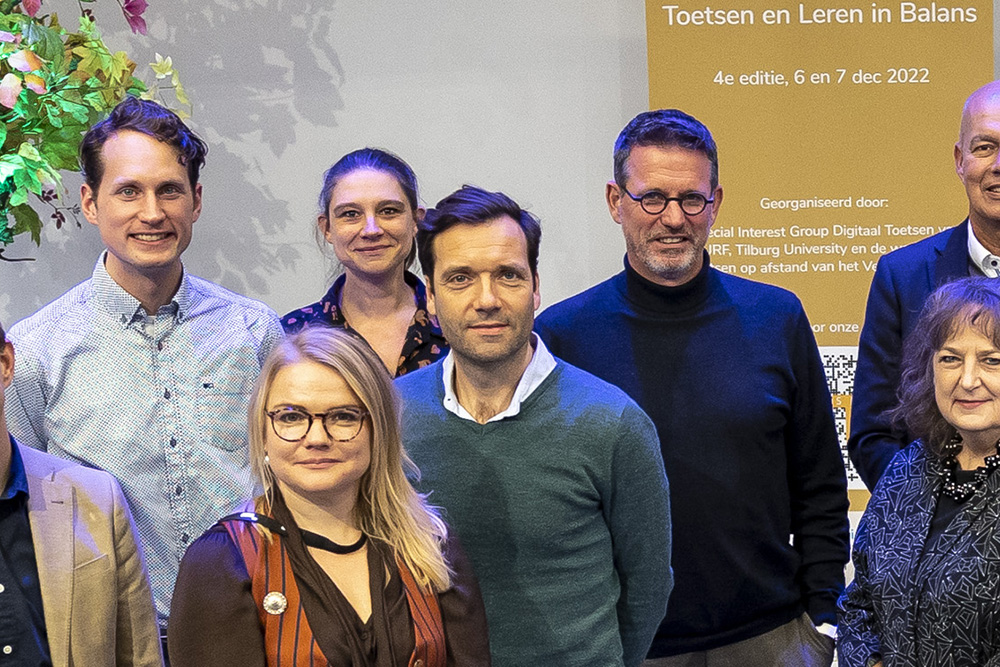
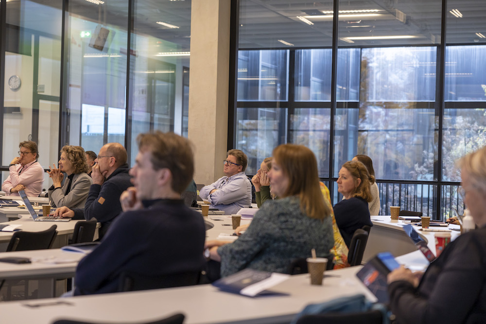
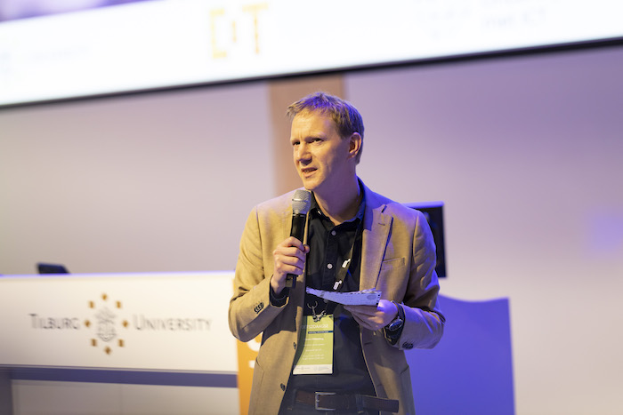
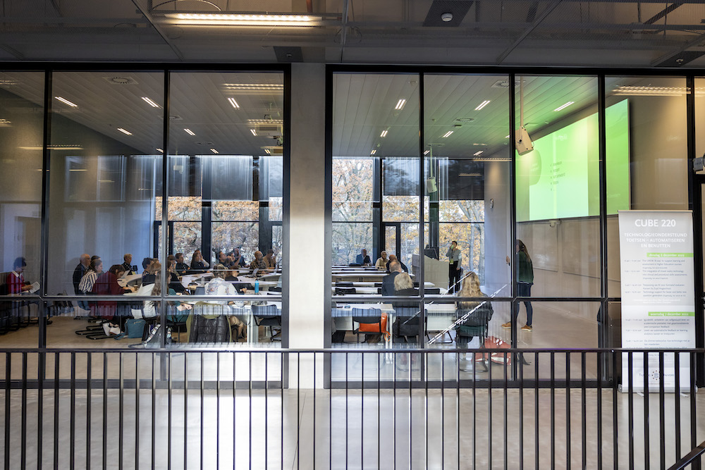
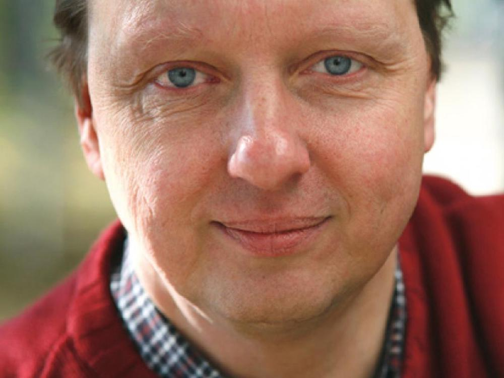
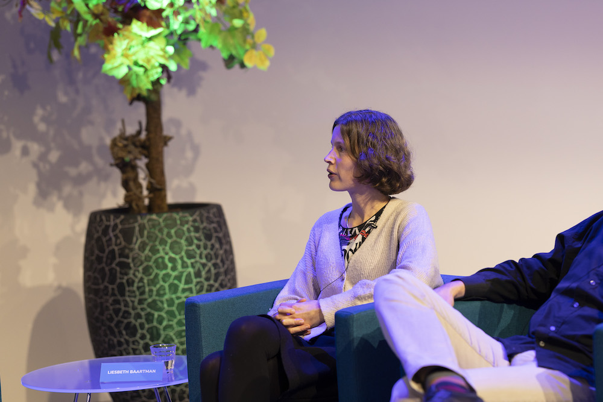
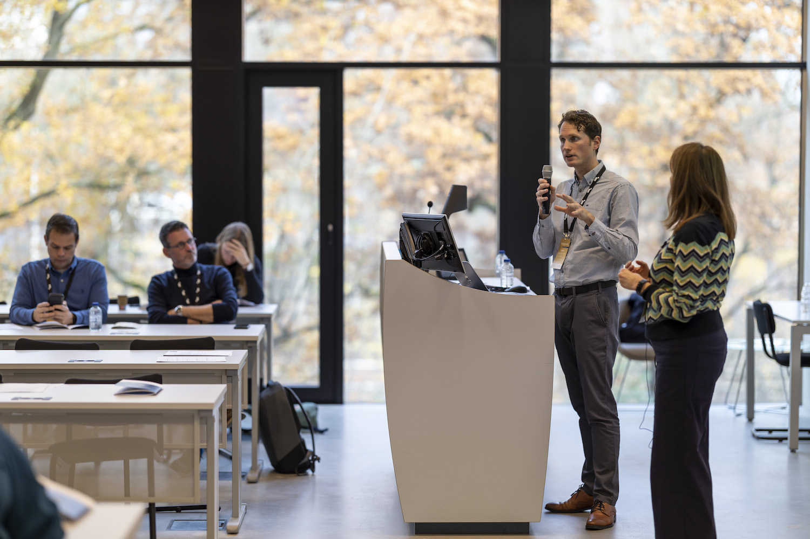
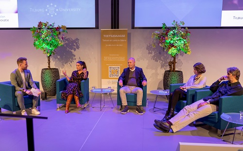
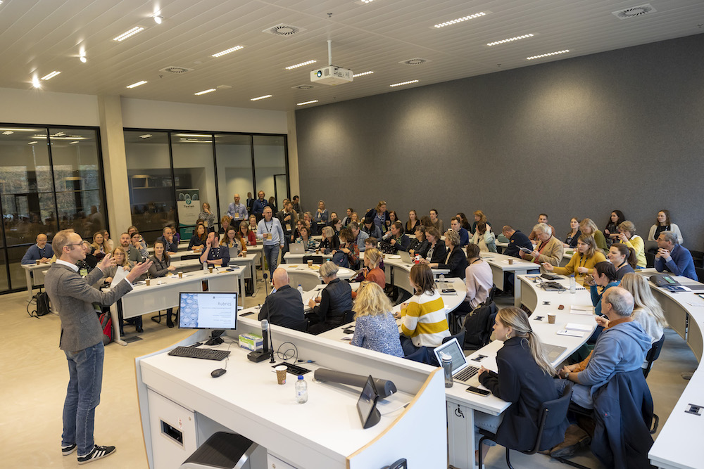
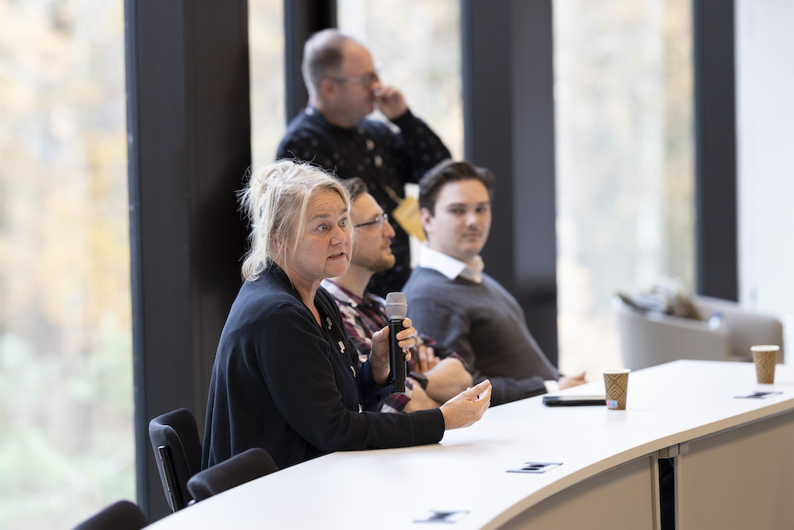

Toets2daagse
Jaargang
T2D 2022
T2D 2018
Sessies dag 1
Sessies dag 1
Sessies dag 2
Sessies dag 1

Compensatoir toetsen doorgelicht
Bij compensatoir toetsen slaagt een student voor een cluster van vakken of een vak met verschillende onderdelen als hij/zij gemiddeld over het cluster of over de onderdelen…
Dec 6, 2022
dr. Niels Smits

De kracht van open standaarden?
Open standaarden zoals Question & Test Interoperability (QTI) worden doorgaans beschouwd als een defensief mechanisme om uitwisselbaarheid van data tussen aanbieders…
Dec 6, 2022
Mark Molenaar, MSc.

Digitaal toetsen organiseer je zo
In het digitale toetsproces zijn veel keuzes te maken, afhankelijk van de instelling, organisatiecultuur en beschikbare middelen. In deze sessie gaat Sharon in op alle…
Dec 6, 2022
drs. Sharon Klinkenberg
Een eerlijke cesuurscore vanuit psychometrisch perspectief met behulp van itemresponstheorie
De cesuurscore op een toets is het minimaal aantal punten dat nodig is om te slagen en geeft ook de minimale bekwaamheid aan die nodig is voor een vervolgopleiding of…
Dec 6, 2022
dr. Monika Vaheoja

Hoe zorg je voor senior gekwalificeerden in examinering (SKE-ers) op een universiteit?
De zorg voor en borging van de kwaliteit van toetsing op opleidingsniveau vraagt om aanzienlijke deskundigheid bij diegenen die hier een belangrijke rol in spelen, zoals…
Dec 7, 2022
drs. Helma Vlas, Sonja Borst, MSc

Keynote Programmatisch toetsen: hype of logische ontwikkeling?
Programmatisch toetsen is erg populair aan het worden. Dan leidt altijd de vraag of het werkelijk een noodzakelijke ontwikkeling en verbetering betreft of slechts een…
Dec 6, 2022
prof. dr. Lambert Schuwirth

Ontwerpkeuzes bij programmatisch toetsen
In deze workshop presenteren Liesbeth en Tamara de uitgangspunten van programmatisch toetsen. Bij de uitgangspunten kun je als opleiding nog allerlei ontwerpkeuzes maken…
Dec 6, 2022
dr. Liesbeth Baartman, dr. Tamara van Schilt-Mol

Ontwikkel je visie op toetsen
In de laatste jaren neemt het aandeel digitale toetsen sterk toe. We zijn op zoek naar nieuwe en veilige manieren om flexibel in tijd en plaats te toetsen. De vraag naar…
Dec 6, 2022
drs. Annette Peet, Edwin Buijs, MSc

Paneldiscussie: Toetsen en leren in balans
Rudy Nicola (Discussiepanelleider) Zijn missie is om het leven van mensen te verrijken met waardevolle verhalen. Verhalen die je raken; enthousiast maken, laten lachen of…
Dec 6, 2022
Rudy Nicola, dr. Tamara van Schilt-Mol, dr. Cor Sluijter, dr. Liesbeth Baartman, prof. dr. Marcel A.L.M. van Assen
Programmatisch Toetsen implementeren: Lessons learned in een design opleiding
In deze sessie delen Linda, Janneke en Lambert het ontwerp en de ervaringen van het implementatie- en professionaliseringsproces van programmatisch toetsen van de opleiding…
Dec 6, 2022
Linda Jakobs, MSc, Janneke Wennekes, MSc, Lambert Zaad

Rubrics (wanneer) zijn ze nuttig als beoordelingsinstrument
verhogen. Maar is dat wel zo? Opleidingen die rubrics inzetten hebben vaak niet de financiële middelen en expertise voor een uitgebreide kwaliteitscontrole. Bovendien staat…
Dec 6, 2022
dr. Joost van Kordelaar

Studiecoaching bij programmatisch toetsen, hoe doe je dat?
Programmatisch toetsen is een holistische benadering van toetsing waarbij gekeken wordt naar de gehele ontwikkeling van de student bij het ontwikkelen van complexe…
Dec 6, 2022
Debby Weerlink, MSc. MEd.
Technology support for faster and better test question generation
There is no doubt that new advancements in assessment technology are improving the test development process and empowering test creators. This session will discuss some of…
Dec 6, 2022
dr. Nathan Thompson
The UNSW ‘AI-way’ to support learning and assessment in Higher Education courses
Dr. David Kellermann successfully developed and used practical MS365 AI tools to streamline his courses. Examples are the automatic answering to student questions via a…
Dec 6, 2022
dr. David Kellermann
The integration of mixed reality technology into clinical and procedural skills assessments
Innovative mixed reality (MR) technologies have the potential to transform the delivery of medical education and may confer some advantages over traditional teaching methods…
Dec 6, 2022
Iona Minty, iBSc, MBChB
Toepassing van AI voor formatief evalueren: Kansen bij Zuyd Hogeschool
In deze sessie zal toegelicht worden welke kansen er zoal liggen voor AI binnen het domein van formatief…
Dec 6, 2022
Ellen Domhof, MEd., drs. Joost Elshoff, dr. Marcel Schmitz
Toets- en itemanalyse: Van kwaliteitsbeoordeling tot toetsverbetering
Een toets- en itemanalyse is onmisbaar bij het beoordelen van de kwaliteit van een toets. Is een toetsvraag niet te moeilijk? Meet een toetsvraag wel wat we willen? Is de…
Dec 6, 2022
dr. Stefan Jansen, Bregtje Seton, MA
Werkplekleren bij het Academisch Centrum Tandheelkunde Amsterdam: Verleden, heden, toekomst
Vanaf studiejaar 2020-2021 wordt bij ACTA binnen enkele klinische lijnen van de masteropleiding Tandheelkunde gewerkt met Entrustable Professional Activities (EPA’s). EPA’s…
Dec 6, 2022
Myrna Roks, MSc. MEd., dr. Irene Aartman
No matching items
Sessies dag 2